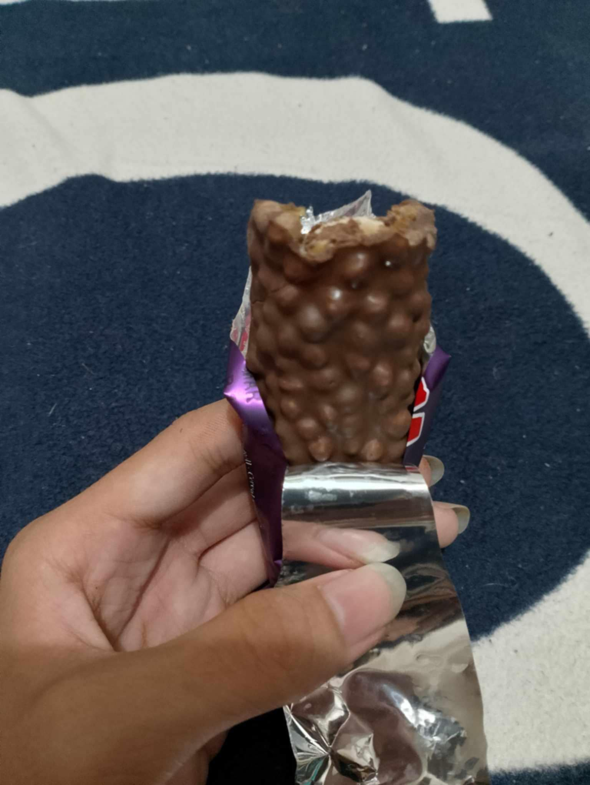
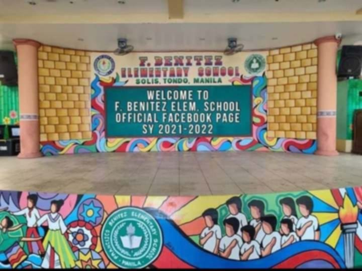

The amazing life of rolando
Good Morning! I'm Rolando N. Rocha lll, I'm 14 years old, My birthday is May 25 2010, I was born in caloocan city. I am currently studying in lakan dula high school and I am from F. binites elementary school.I am a scholar and one of the members called tondo 69learners. I live now at 1404 alley 5 Sawata st. Maypajo Caloocan City. My name Rolando N. Rocha lll Rolando= In German the meaning of the name Rolando is: Renowned in the land. Roland was a legendary hero who served Charlemagne, and In American the meaning of the name Rolando is: Famous.My full name is Rolando N. Rocha lll, comes from my grandfather, my father is jr. and me is lll. I have only 2 motto in my life if you don't risk your life you can't create a beatifuly future and always keep your promise no matter what is your position in life. Those are my two mottos in life and I stick by them.
I like playing mobile games, reading book, and watch anime . I have many favorites like foods, ice cream,chocolates , cycling and etc. My favorite game to play is mobile legend i've been playing it since 2016 i'm an original player in this game when i'm sad i play it to relieve myself i met a lot of nice people here even sometimes there are bad people it's still fun to play i never get tired of playing it because it's so much I have a lot of good memories from this game. I knows that I will meet many new people and make new friends in this game. I will never get tired of playing it. This is one of the reasons why I go but I'm happier when I'm with my whole family because it's only once we can bond, I love my family very much even though sometimes I get annoyed with them but that's no reason for me to lose respect for my parents. I am very proud of my parents because they are always there for us even when they are having a hard time. Rolando N. Rocha JR. is my father he is my loving father even if he gets angry sometimes but he is really worried, Rosalinda N. Rocha he is my mom the light of our home mom is very kind to us he is always the one we take sides with when we are scolded.
i've been playing it since 2016 i'm an original player in this game when i'm sad i play it to relieve myself i met a lot of nice people here even sometimes there are bad people it's still fun to play i never get tired of playing it because it's so much I have a lot of good memories from this game. I knows that I will meet many new people and make new friends in this game. I will never get tired of playing it. This is one of the reasons why I go but I'm happier when I'm with my whole family because it's only once we can bond, I love my family very much even though sometimes I get annoyed with them but that's no reason for me to lose respect for my parents. I am very proud of my parents because they are always there for us even when they are having a hard time. Rolando N. Rocha JR. is my father he is my loving father even if he gets angry sometimes but he is really worried, Rosalinda N. Rocha he is my mom the light of our home mom is very kind to us he is always the one we take sides with when we are scolded.
I still remember I was amazed at the fire works when I was young, it was so beautiful to the eyes and that's what I was really looking forward to because I only see fireworks once a year, the fireworks are so beautiful and colorful, I will never forget the fireworks when I was young i thinking if i see a biggest fireworks it's so cool.I was challenged when I went home and I didn't have a fare, I had to walk that way until I got home, I was so tired when I got home that I could feel my legs, it happened because I ran out of money when my friends and I wandered around I bought it and noticed that I didn't have enough money for the fare, so I walked the sm sanlasaro to the house, but he learned not to spend money so that I won't be in trouble one day if I need money for emergency.
My value has changed in developing myself and trying to finish school so that I can make up for the suffering of my parents. I need to be strong for my future because my dream is to become an Succesfuly entrepreneur one day and give a good life to the my parents, I thank them for the sacrifices they made for me to reach this far.
caloocan city
 f. benites
lakan dula high
tondo 69ers foundation.
links
Rolandotiktokacc
RolandoRochalll
Rolandoinsthegram